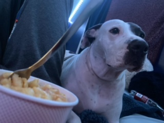
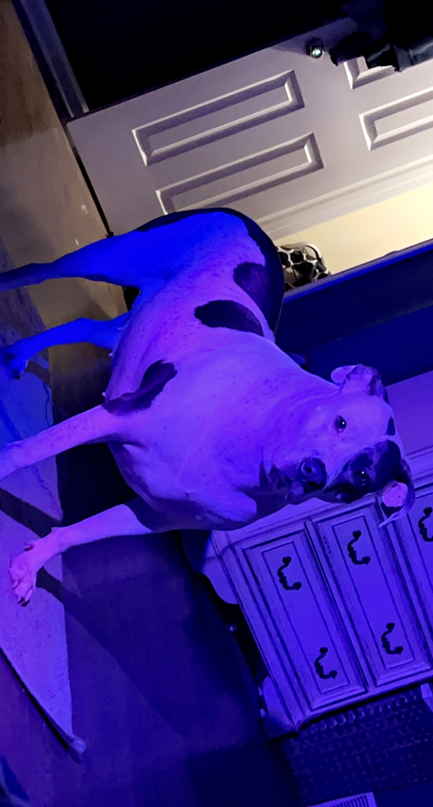
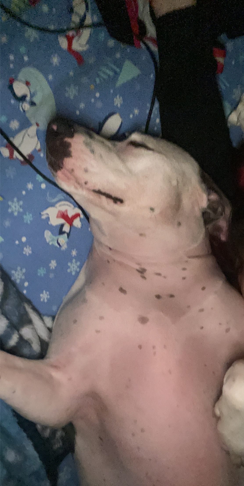
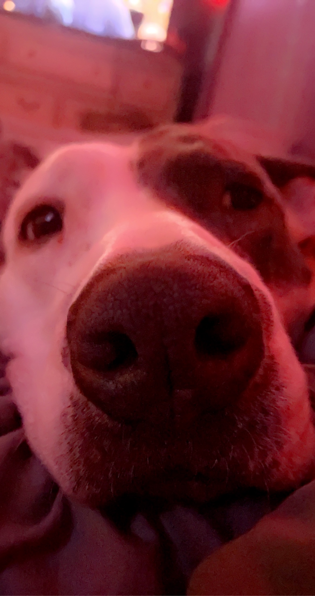

Daisy is the best dog ever
Daisy loves food.
Daisy waits all day for food. As soon as she hears anything in the kitchen, she runs down the stairs. She sits right in the kitchen, and waits patiently for any bites. She has mannors though, she doesn't beg for food. No matter what time of day it is, if you use the microwave Daisy will hear it.
Daisy has a lot of names

Big Daisy
Daisy Duke
Big girl
Pretty girl
Daisy's favorite pastime
Daisy loves to sleep and take naps. She always makes sure she has enough energy for every situation by getting extra sleep. Unless she is eating, playing with her toys, or outside, you can most likely find her taking a nap in her bed.
Daisy's favortie toy
Daisy loves to play tug o war. She loves to get her rope and bring it to you so she can play. Most of the time she tries to cheat by making it where you have little room to hold the rope. She is also ver competetive, she'll never let you win.
Rope